Chapter 6 Optimization
Economic models are often based on the idea that a decision-maker makes an optimal decision based on possible alternatives.
We formalize optimal decisions as maximizing or minimizing a function.
For example:
A company wants to minimize production costs or maximize profit;
A consumer wants to maximize his utility;
A (political) decision-maker wants to maximize social welfare.
Optimization is central to economics, business administration, management, strategy, …
In this chapter we cover the optimization of functions of one variable; Functions of several variables follow later.
6.1 Necessary conditions for maxima and minima
Optimizing a function \(f (x), x \in D\), means finding the value \(x\) at which an extreme value (also extremum) occurs; this can be a maximum or a minimum.
In the case \(D=\mathbb{R}\) there is an optimization problem without constraints.
Definition 6.1 (Maximum, Minimum)
- The function \(f\) has a global maximum at the position \(x ^∗\) if:
\(f (x^∗ ) \geq f (x)\) for all \(x\).
Illustration
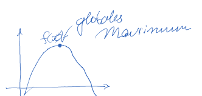- A local maximum is at the position \(\hat{x}\) if there is a \(\epsilon >0\) with
\(f ( \hat {x}) \geq f (x)\) for \(\hat {x} − \epsilon \leq x \leq \hat {x} + \epsilon\).
Illustration
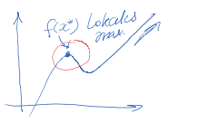- Similarly, \(f\) has a global minimum at \(x^ ∗\) if:
\(f (x^ ∗ ) \leq f (x)\) for all \(x\).
Illustration
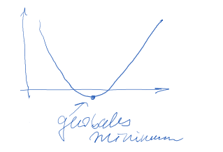- A local minimum is at \(\hat {x}\) if there is a \(\epsilon >0\) with
\(f ( \hat {x}) \leq f (x)\) for \(\hat {x} − \epsilon \leq x \leq \hat {x} + \epsilon\).
Illustration
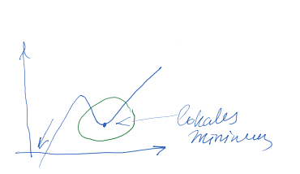The following theorem gives us the necessary condition for a local maximum and a local minimum.
Theorem 6.1 (first-order condition) If the differentiable function \(f\) has an extreme value at \(x^*\), then: \(f^\prime (x^ ∗ ) = 0\).
This equation is also called first-order condition (FOC).
It is a necessary condition.
In other words: If \(f' (x) \neq 0\), then \(f\) has no extremum in \(x\).
The first-order condition is not a sufficient condition, i.e. the converse does not hold!
In other words: The statement “If \(f' (x^∗ ) = 0\), then \(f\) has an extremum at \(x^ ∗\)” is wrong.
Example 6.1 (FOC is not a sufficient condition) Consider the function \[f (x) = 16x − 4x^ 3 + x^ 4.\]
The derivative is:
\[f' (x) = 16 − 12x^ 2 + 4x^ 3\]
and one easily checks that \(f' (2) = 0\).
The graph shows that \(f\) has no extremum at \(x = 2\).
A point with \(f' (x) = 0\), at which there is no extremum, is called an inflection point. 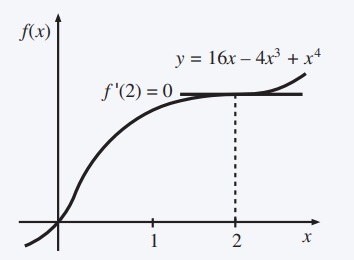
In order to give a label to all points where \(f'(x)=0\), we introduce the definition of stationary or critical points.
Definition 6.2 (stationary point) Let \(f\) be a differentiable function. Every point \(x\) with \(f' (x) = 0\) is a stationary point/ critical point. A stationary point is either an extremum or an inflection point.
An example application concerns profit maximization for a monopolist such as the guitar manufacturer.
Example 6.2 (Monopoly with linear demand and linear costs) A monopolist is in the following situation:
linear demand \(x = 100 − p\) (\(x\) is demand, \(p\) is price);
linear cost function \(C(x) = 25x\).
Transforming the demand function into \(p = 100 − x\) gives the following profit function:
\(\pi(x) = px − C = 100x − x^2 − 25x\).
The profit is maximum at the point \(x^ ∗\) with
\(\pi' (x^ ∗ ) = 100 − 2x^∗ − 25 = 0\),
so
\(x^∗ = (100 − 25)/ 2 = 37.5\).
The profit-maximizing price and the corresponding profit are
\(p^∗ = 100 − x^∗ = 62.50\),
\(\pi^∗ = (62.50 − 25) 37.5 = 1,406.25\). 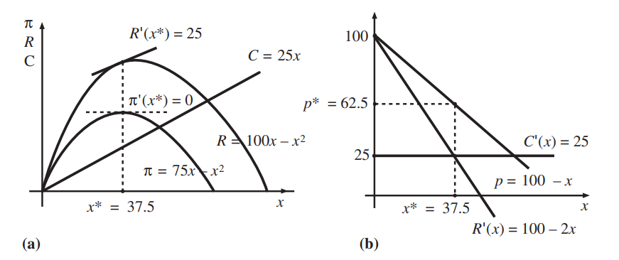
The graph on the left shows:
- the total revenue \(R(x) = px = 100x − x^2\)
- the total cost \(C(x) = 25x\)
- the profit \(π(x) = (100 − 25)x − x^2 = 75x − x^ 2\)
The right graph shows:
- the demand \(p = 100 − x\)
- the marginal revenue \(R' (x) = 100 − 2x\)
- the marginal cost \(C' (x) = 25\)
Exercise 6.1 (extreme values) Find the extreme values of
\(f (x) = 2x^ 3 − 0.5x^ 2 + 2\)
\(f (x) = 4x^ 2 − 5x + 10\)
\(f(x) = 6x/(x^4 + 2)\)
\(f (x) = 0.5x^ 4 − 5x^ 3 + 2x^ 2\)
Answer
- \(f (x) = 2x^ 3 − 0,5x^ 2 + 2\)
\(f'(x)=6x^2-x=0\) (FOC)
\(x(6x-1)=0\) \(\Leftrightarrow\) \({x}_{1}^* =0\);
\(6x-1=0 \Rightarrow {x}_{2}^{*}= \frac{1}{6}\)
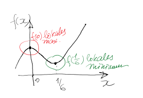
- \(f (x) = 4x^ 2 − 5x + 10\)
\(f'(x)=8x-5=0\) (FOC) \(\Leftrightarrow x^*= \frac{5}{8}\)
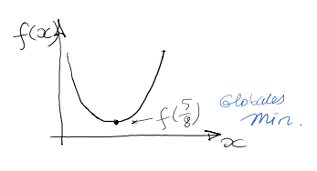
- \(f (x) = 6x/(x^ 4 + 2)\)
\(f'(x)= \frac{6(x^4+2)-6x(4x^3)}{(x^4+2)^2} =0\)
\(x^4=12/18=2/3\)
\(x^*_{1,2}= \pm \sqrt[4]{ \frac{2}{3} }\) \(= \pm 0.9036\)
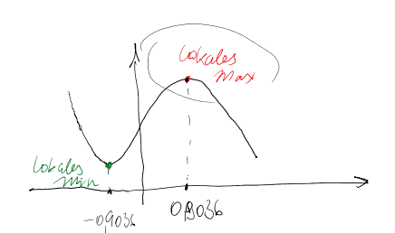
- \(f (x) = 0,5x^ 4 − 5x^ 3 + 2x^ 2\)
\(f'(x)=0,5 \cdot 4x^3-5 \cdot 3x^2+ 2 \cdot 2x=0\)
\(\Leftrightarrow x(x^2-15x+4)=0\)
\(x_1^*=0\)
\(x_{2}^*= \frac{15- \sqrt{193} }{4} = 0.2769\)
\(x_{3}^*= \frac{15+ \sqrt{193} }{4} = 7.2231\)
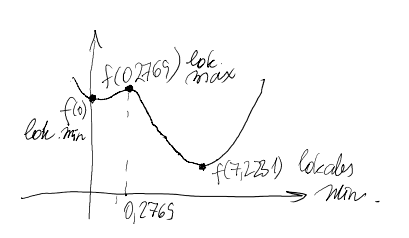
A firm is the sole producer of a product with a cost function:
\[\displaystyle f(x)=100+20x+2x^2\].
If the company increases the price, fewer units will be sold; the price \(p(x)\) expressed as a function of the number of units \(x\) is:
6.2 Second-order conditions
Second order derivatives can determine whether a stationary point is a maximum or a minimum.
The three possible cases for stationary points are shown on the graphs below.
Graph (a) shows that in the case of a maximum, the slope of the function is positive to the left of the maximum (i.e. for \(x < x^ ∗\) ) and that it is negative to the right of the maximum (\(x > x^ ∗\) ).
This is captured by the negative slope of \(f'\) at \(x^ ∗\) (Graph (d)).
For a minimum the behavior is just the opposite (graphs (b) and (e)).
In the case of an inflection point (graphs (c) and (f)) this behavior cannot occur.
Hence \(f''(x^∗ ) = 0\). The function changes from concave to convex (or vice versa).
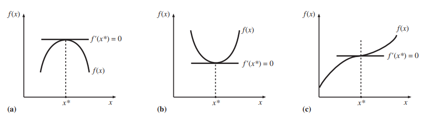
Theorem 6.2 (Sufficient condition for maximum (minimum)) Let \(f\) be twice differentiable.
If \(f' (x^ ∗ ) = 0\) and \(f''(x ∗ ) < 0\), then \(f\) has a local maximum at \(x^ ∗\) .
If \(f' (x^ ∗ ) = 0\) and \(''f(x^ ∗ ) > 0\), then \(f\) has a local minimum at \(x^ ∗\) .
The theorem gives sufficient conditions for determining whether a stationary point is a minimum or a maximum.
Exercise 6.2 (maximum or minimum) For the following function, use the second-order conditions to determine whether an extremum is a local maximum or a local minimum.
\(f (x) = 2x^ 3 − 0.5x^ 2 + 2\)Answer
\(f'(x)=6x^2-x=0\)
\(x(6x-1)=0 \rightarrow x_1^*=0 \text{ und }x_2^*=1/6\)
\(f''(x)=(6x^2)'=12x-1\)
\(x_1^*=0 : f''(x_1^*)=12 \cdot 0-1=-1<0\rightarrow\) lokales Maximum
\(x_2^*=1/6:f''(x_2^*)=12 \cdot(1/6)-1=1>0\rightarrow\) lokales Minimum
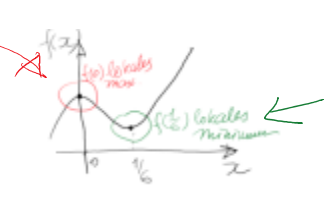Example 6.3 (Monopoly with linear demand and linear costs) In Example 6.2, we obtained:
\(\pi' (x^ ∗ ) = 100 − 2x^∗ − 25 = 0\),
and
\(x^∗ = (100 − 25)/ 2 = 37.5\).
Now, we verify, that the profit has its maximum at \(x^∗\) using the second derivative:
\[\pi'' (x^ ∗ ) = − 2 <0,\]
It means, that at \(x^∗=37.5\) the profit function reaches its maximum.
Example 6.4 (Approximate maximization of profit functions with Taylor Approximation) In Example 5.8 we considered a monopolist with the following profit function:
\[\pi(q) = 100\cdot \exp(-0.01 q) \cdot q - 1000 - q.\]
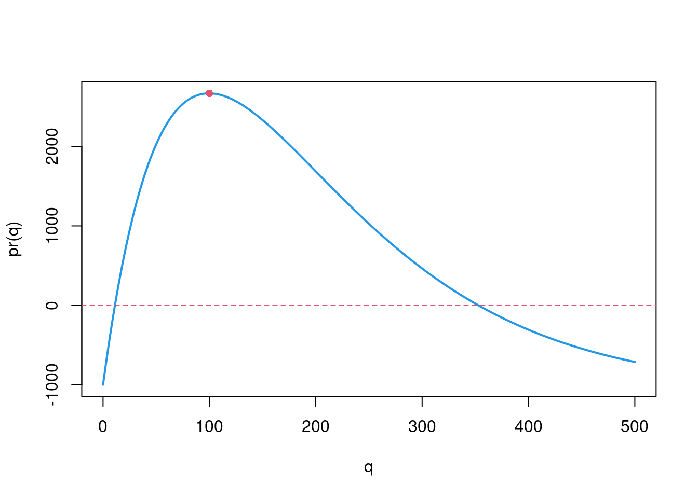
The derivative of this profit function is:
\[\pi^\prime(q) = (-1)\cdot\exp(-0.01q)\cdot q + 100\cdot\exp(-0.01q) - 1.\]
Note: we can not solve for \(q\) if we set the derivative to zero! (Try that :))
The question is: How can we find the optimal production \(q^*\)? \(\leadsto\) visually: the maximum has to be around \(q=100\). But can we get a better approximation?
We approximate the derivative \(\pi^\prime(q)\) using its first-order Taylor expansion around \(q_0=100\).
- The function value at \(q_0=100\) is:
\[\pi^\prime(100) = (-1)\cdot \exp(-0.01\cdot 100)\cdot 100 + 100\cdot\exp(-0.01\cdot 100) - 1 = -1,\]
- The derivative of the function (here \(\pi^{\prime\prime}(q)\)) is:
\[\begin{align*}\pi^{\prime\prime}(q) &= 0.01\exp(-0.01q)\cdot q - \exp(-0.01q)+ 100(-0.01)\exp(-0.01q) \\ &= 0.01\exp(-0.01q)\cdot q - 2\exp(-0.01q).\end{align*}\]
So \[\begin{align*}\pi^{\prime\prime}(q_0=100)&=0.01\exp(-0.01\cdot 100)\cdot 100 -2\exp(-0.01\cdot 100) \\ &= -\exp(-1)=-\frac1e.\end{align*}\]
The first order Taylor approximation for the derivative of the profit function:
\[\begin{align*}\pi^\prime(q) &\approx \pi^\prime(q_0) + \pi^{\prime\prime}(q_0)(q-q_0) \\ &=-1 - \frac 1e\cdot(q-100) \end{align*}\]
Setting the expression above to zero, we get:
\[-1 - \frac 1e\cdot(q-100)=0\rightarrow q^*_{approx}=-e+100=97.2817.\]
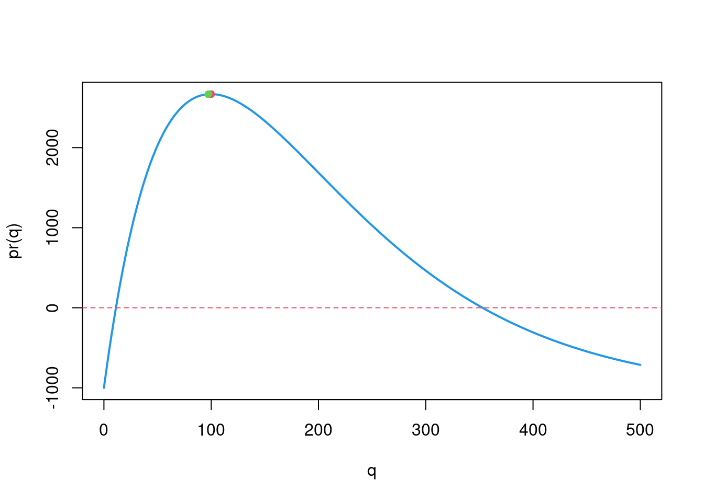
That is, the profit is approximately in its maximum for \(q^*_{approx}=97.2817.\)
Now, we can also verify whether the second derivative is smaller than zero (sufficient condition for the maximum):
\[\begin{align*}\pi^{\prime\prime}(q^*_{approx})&=0.01\exp(-0.01\cdot 97.2817)\cdot 97.2817 -2\exp(-0.01\cdot 97.2817) \\ &=-0.3883<0.\end{align*}\]
6.3 Optimization on an interval
In practice, most optimization problems have to be solved under constraints, for example:
a firm can only produce non-negative quantities of goods;
a company has production capacity limitations;
a consumer has a limited budget.
Example 6.5 (Optimization on an interval) We decide \[\begin{equation*} \max_x f(x)=3-2x\quad\text{ under the condition } 0\leq x\leq 1. \end{equation*}\]
The case without constraint has no extremes (\(f^\prime(x)=-2\), for all \(x\)), so the maximum must be on one of the interval corners.
Since the derivative is negative, i.e. the function is decreasing, the solution is the left boundary \(x^\ast=0\).
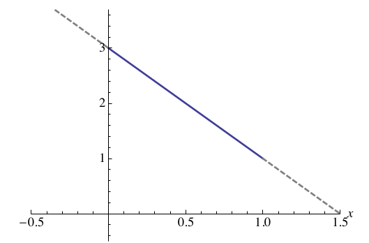
The general formulation of an optimization problem under Constraints (given as an interval) is as follows: \[\begin{equation} \max_x f(x)\quad\text{ under the condition }\quad a\leq x\leq b.\tag{6.1} \end{equation}\]
Alternatively, this can be expressed as \[\begin{equation*} \max_{x\in [a,b]} f(x). \end{equation*}\]
Three cases can be identified as possible solutions to the maximization problem occur:
\(x^\ast=a\): In this case, \(f^\prime(x^\ast)\leq 0\) (left graph)
\(a<x^\ast<b\): In this case \(f^\prime(x)=0\) (middle graph)
\(x^\ast=b\): In this case \(f^\prime(x^\ast)\geq 0\) (right graph) 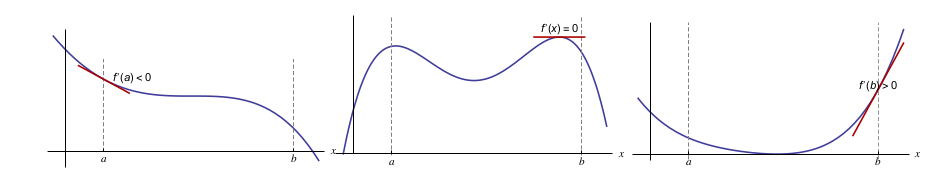
In cases (i) and (iii), the constraint is mandatory; in (ii) the constraint is non-mandatory.
The solution in (ii) is called internal solution.
The following sentence summarizes the three situations.
Theorem 6.3 (Maximization under constraints) A solution \(x^\ast\) to the problem \[\begin{equation*} \max_x f(x)\quad\text{ under the condition } a\leq x\leq b \end{equation*}\] meets one or both of the following conditions: \[\begin{align*} \phantom{test test} % f^\prime(x^\ast)\leq 0&\quad\text{ and }\quad (x^\ast-a) f^\prime(x^\ast)=0\\ f^\prime(x^\ast)\geq 0&\quad\text{ and }\quad (b-x^\ast) f^\prime(x^\ast)=0. \end{align*}\] If both conditions are met and additionally \(f^\prime(a)\not=0\), \(f^\prime(b)\not=0\), then \(x^\ast\) is an inner solution, i.e. \(a<x^\ast<b\).
Theorem 6.4 (Minimization under constraints) A solution \(x^\ast\) to the problem \[\begin{equation*} \min_x f(x)\quad\text{ under the condition } a\leq x\leq b, \end{equation*}\] meets one or both of the following conditions: \[\begin{align*} \phantom{test test} % f^\prime(x^\ast)\geq 0&\quad\text{ and }\quad (x^\ast-a) f^\prime(x^\ast)=0\\ f^\prime(x^\ast)\leq 0&\quad\text{ and }\quad (b-x^\ast) f^\prime(x^\ast)=0. \end{align*}\] If both conditions are met and additionally \(f^\prime(a)\not=0\), \(f^\prime(b)\not=0\), then \(x^\ast\) is an inner solution, i.e. \(a<x^\ast<b\).
To practically determine the maximum/minimum, carry out the following steps:
- find the derivative of \(f(x)\);
- see which of the two conditions from the theorems @ref(thm: thmmaxneb) and 6.4 (depending on whether you should maximize or minimize) apply and
- solve for \(x\).
- Finally, check whether the resulting values for \(x\) are from the target interval and
- compare the function values if you received several \(x\) values. The smallest (largest) function value then determines the minimum (maximum).
Alternatively, you can
- determine all local maxima and minima for the objective function;
- The associated \(x\) values, which are also on the target interval, are considered candidates for Min (Max) considered.
- Then compare the function values that represent local min (max) with the boundary values \(f(a),f(b)\). The smallest (largest) function value then determines the minimum (maximum).
Exercise 6.3 (Minimum and maximum under constraints) Solve the following problems:
\(\max_x 3 + 2x\) under the condition \(0 ≤ x ≤ 10\)
\(\max_x 1 + 10x^ 2\) under the condition \(5 ≤ x ≤ 20\)
\(\min_x 5 − x^ 2\) under the condition \(0 ≤ x ≤ 10\)
Answer
- \(\max_{0 \leq x \leq 10 }3+2x\)
\(f' (x^ ∗ ) ≤ 0\) and \((x^ ∗ − a)f' (x^ ∗ ) = 0\) does not hold
\(f' (x^ ∗ ) ≥ 0\) and \((b − x^ ∗ )f' (x^ ∗ ) = 0\) holds, therefore
\(f'(x)=(3+2x)'=2>0\) always applies
\((10-x) \cdot 2=0 \Leftrightarrow 20-2x=0 \Rightarrow x^*=10\)
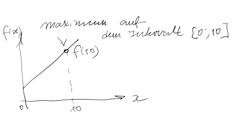
- \(\max_{5 \leq x \leq 20 }1+10x^2\)
\(f' (x^ ∗ ) ≤ 0\) and \((x^ ∗ − a)f' (x^ ∗ ) = 0\) does not hold
\(f' (x^ ∗ ) ≥ 0\) and \((b − x^ ∗ )f' (x^ ∗ ) = 0\) holds, therefore
\(f'(x)=(1+10x^2)'=20x>0 \ for \ 5 \leq x \leq 20\)
\((20-x) \cdot 20x=0 \Rightarrow 20-x=0 \Rightarrow x_1^*=20\)
\(20x=0 \Rightarrow x_2^* =0 \neq for \ 5 \leq x \leq 20\)!
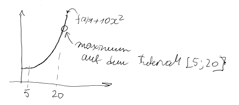
- \(\min_{0 \leq x \leq 10 }5-x^2\)
\(f' (x^ ∗ ) ≥ 0\) and \((x^ ∗ − a)f' (x^ ∗ ) = 0\) does not hold
\(f' (x^ ∗ ) ≤ 0\) and \((b − x^ ∗ )f' (x^ ∗ ) = 0\) holds, therefore
\(f'(x)=(5-x^2)'= -2x<0\) for \(0 ≤ x ≤ 10\)
\((10-x)(-2x)=0 \rightarrow x_1^*=0 \Rightarrow f(0)=5-0^2=5\)
\(x_2^*=10 \Rightarrow f(10)=5-10^2=-95\)
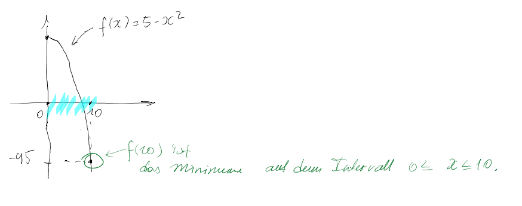